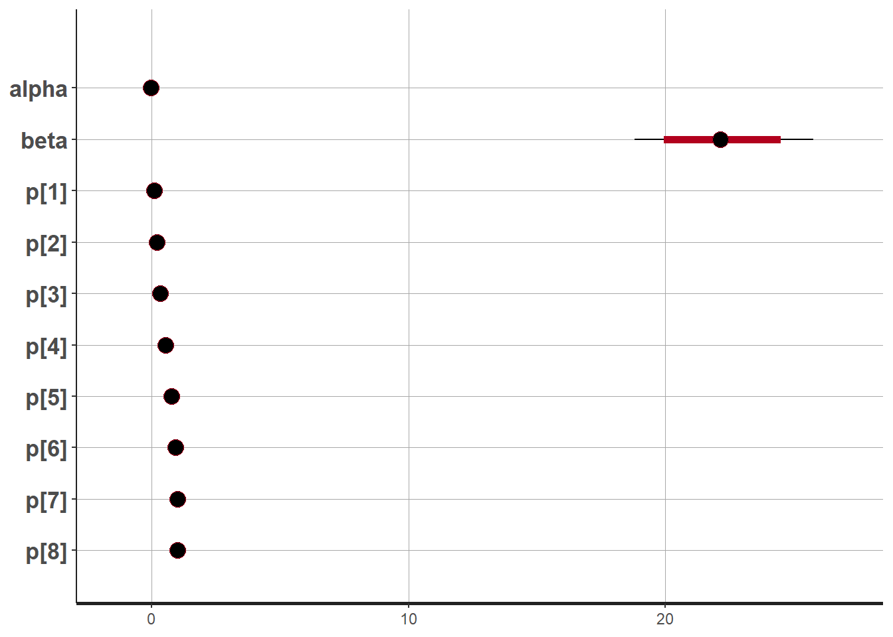
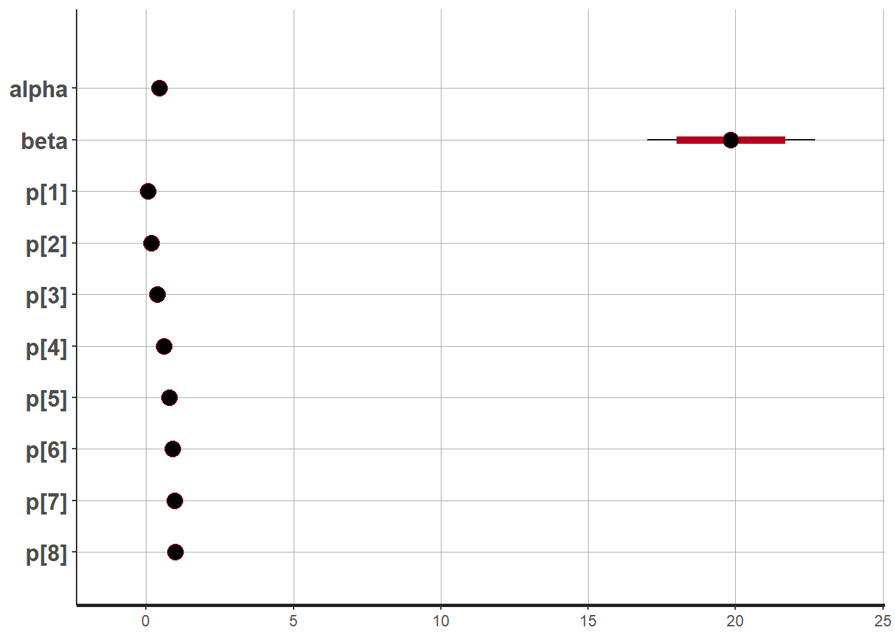
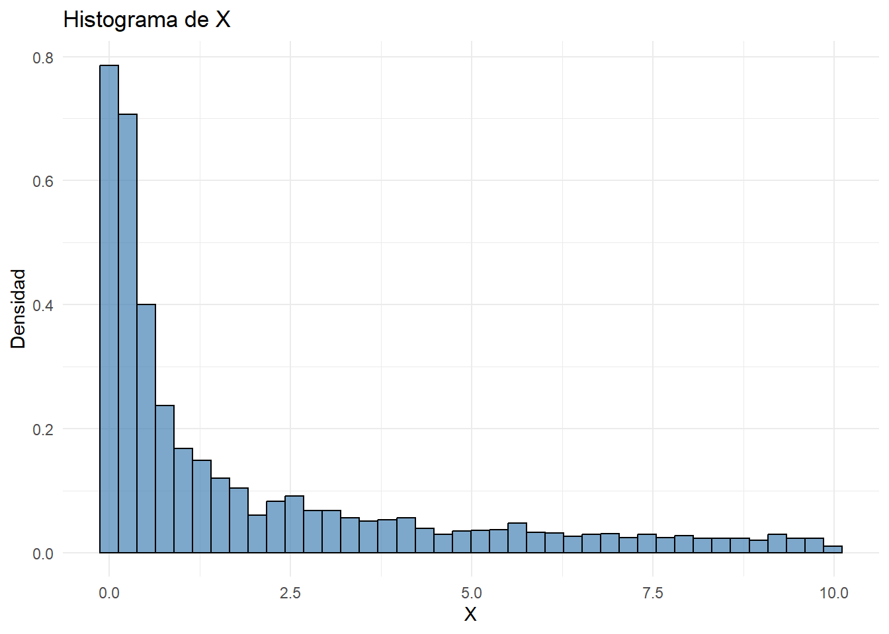
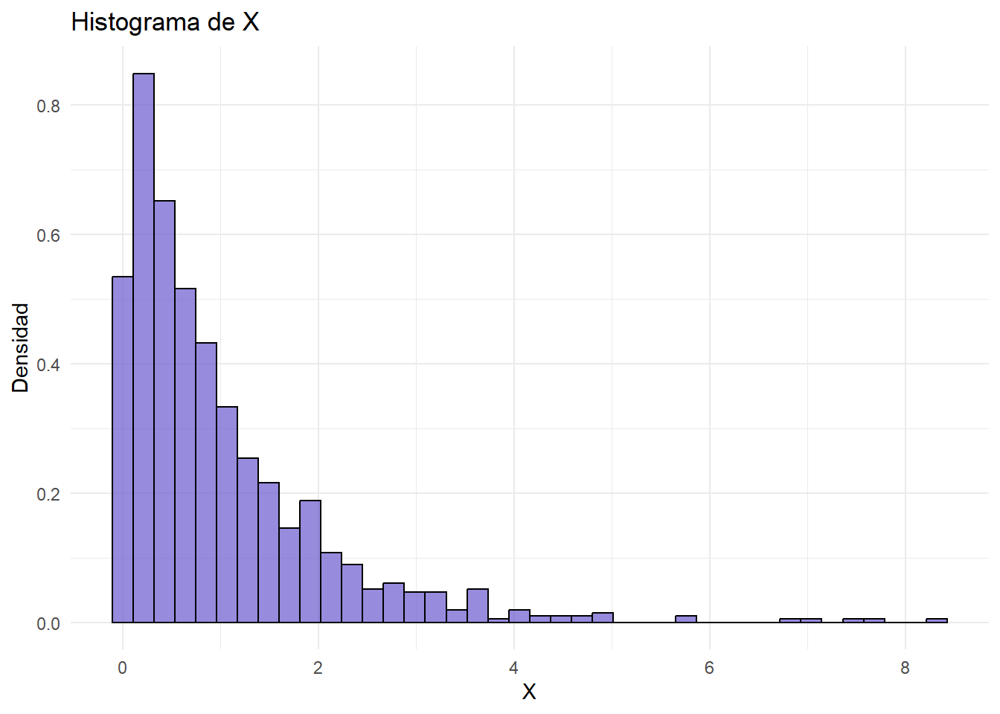
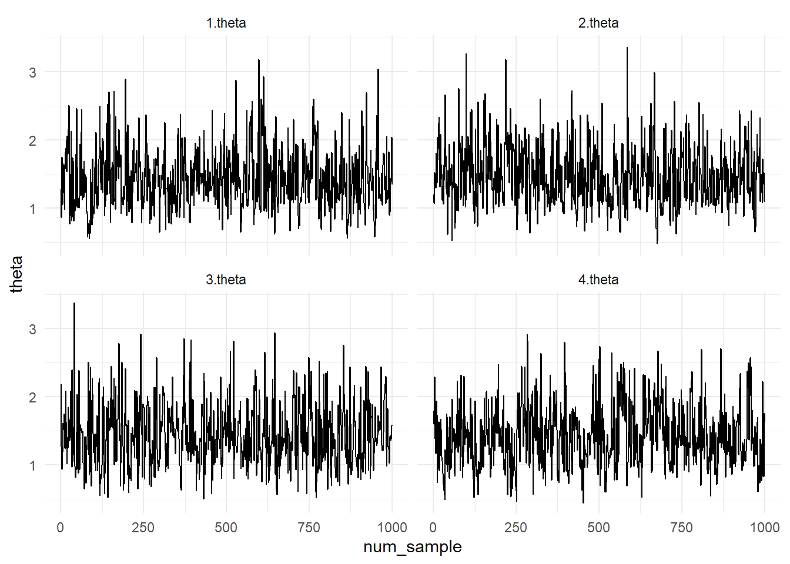
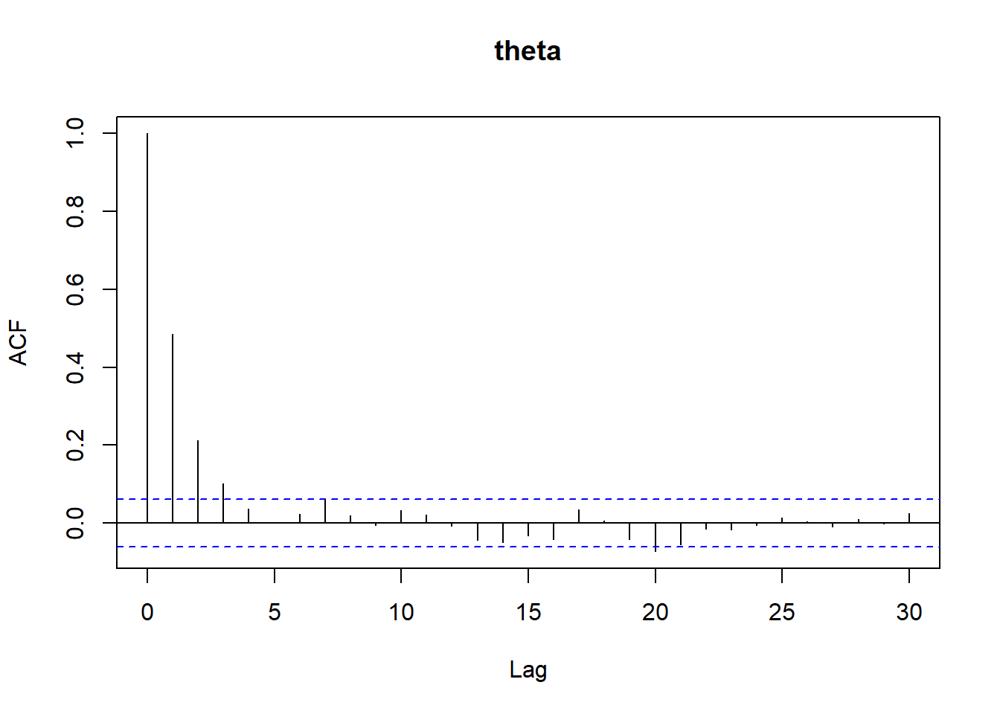
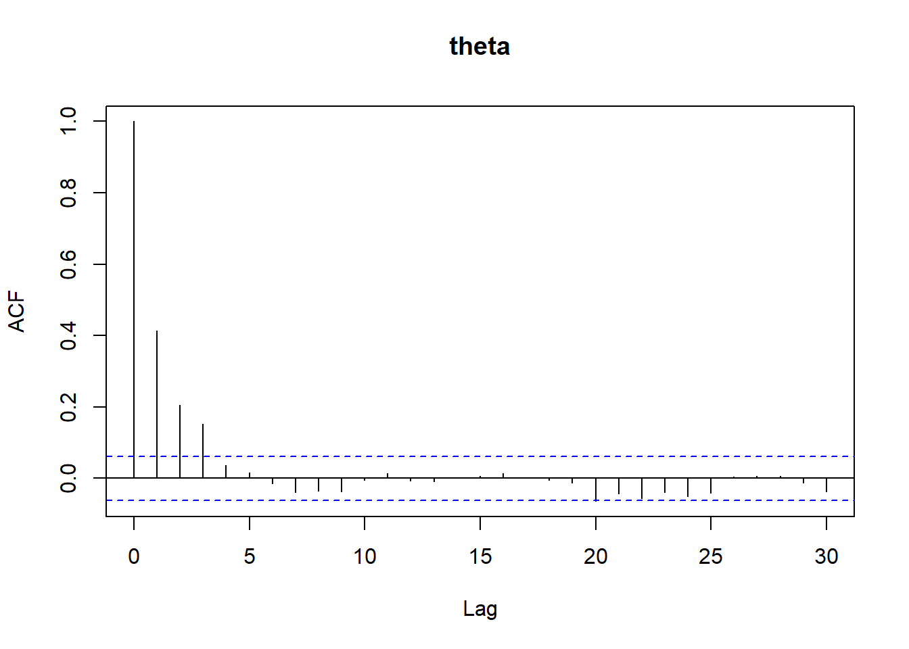
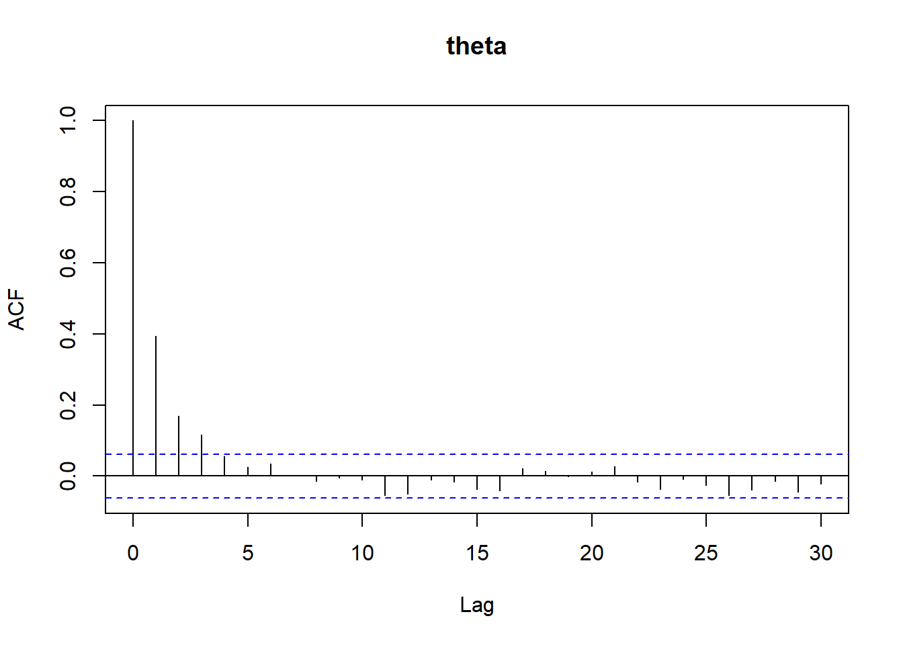
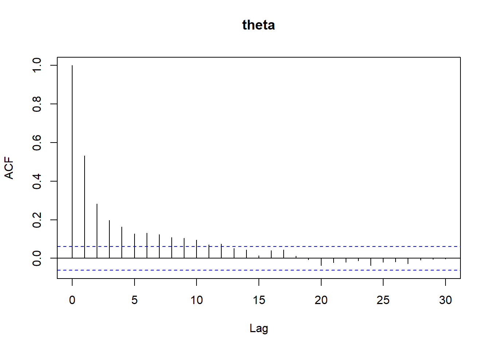

dosis <- c(1.6907, 1.7242, 1.7552, 1.7842,
1.8113, 1.8369, 1.8610, 1.8839)
muertos <- c(6, 13, 18, 28, 52, 53, 61, 60)
expuestos <- c(59, 60, 62, 56, 63, 59, 62, 60)
data_input <- list(
k = length(muertos),
n = expuestos,
y = muertos,
w = dosis - mean(dosis)
)Tarea 4 - Modelos Lineales Generalizados

Fecha de entrega: 8 de marzo de 2024.
- Blanca E. García Manjarrez – 118886
- Mariano Villafuerte Gonzalez – 156057
- Thomas M. Rudolf - 169293
- Yuneri Pérez Arellano - 199813
- Spiegelhalter et al. (1995) analiza la mortalidad del escarabajo del trigo en la siguiente tabla,usando BUGS.
| Dosis | No Muertos | No Expuestos |
|---|---|---|
| \(w_i\) | \(y_i\) | \(n_i\) |
| 1.6907 | 6 | 59 |
| 1.7242 | 13 | 60 |
| 1.7552 | 18 | 62 |
| 1.7842 | 28 | 56 |
| 1.8113 | 52 | 63 |
| 1.8369 | 53 | 59 |
| 1.8610 | 61 | 62 |
| 1.8839 | 60 | 60 |
Estos autores usaron una parametrización usual en dos parámetros de la forma \(p_i\equiv P(muerte\mid w_i)\), pero comparan tres funciones ligas diferentes:
\[logit:p_i= \frac{exp(\alpha+\beta z_i)}{1+exp(\alpha+\beta z_i)}\] \[probit:p_i= \Phi(\alpha+\beta z_i)\] \[complementario \quad log-log:p_i=1-exp[-exp(\alpha+\beta z_i)]\] en donde se usa la covariada centrada \(z_i=w_i-\bar{w}\) para reducir la correlación entre la ordenada \(\alpha\) y la pendiente \(\beta\). En OpenBUGS el código para implementar este modelo es el que sigue:
model{
for (i in 1:k){
y[i] ~ dbin(p[i],n[i])
logit(p[i]) <- alpha + beta*(w[i]-mean(w[])
# probit(p[i]) <- alpha + beta*(w[i]-mean(w[])
# cloglog(p[i]) <- alpha + beta*(w[i]-mean(w[])
} #fin del loop i
alpha ~ dnorm(0.0,1.0e-3)
dbeta ~ dnorm(0.0,1.0e-3)
} #fin del códigoLo que sigue al símbolo # es un comentario, así que esta versión corresponde al modelo logit. También dbin denota la distribución binomial y dnorm denota la distribución normal, donde el segundo argumento denota la precisión, no la varianza (entonces las iniciales normales para \(\alpha\) y \(\beta\) tienen precisión 0.001, que son aproximadamente iniciales planas (no informativas)). Hacer el análisis en OpenBUGS.
data {
int<lower=0> k; // observaciones
array[k] int<lower=0> n; // expuestos
array[k] int<lower=0> y; // muertos
array[k] real w; // dosis
}
transformed data {
real w_mean = mean(w); // promedio de w para centrar
}
parameters {
real alpha;
real beta;
}
transformed parameters {
array[k] real p; // probability of success
for (i in 1:k) {
p[i] = 1 - exp(-exp(alpha + beta * (w[i] - w_mean))); // loglog
}
}
model {
alpha ~ normal(0, 1000); // inicial de alfa
beta ~ normal(0, 1000); // inicial de beta
for (i in 1:k) {
y[i] ~ binomial(n[i], p[i]);
}
}# Realiza el muestreo
model_fit <- rstan::sampling(model_p1_cloglog,
data = data_input,
refresh=0)| Resumen de Modelo log-log | |||||
| variable | mean | sd | 50% | 2.5% | 97.5% |
|---|---|---|---|---|---|
| alpha | −0.05 | 0.08 | −0.04 | −0.20 | 0.11 |
| beta | 22.20 | 1.77 | 22.15 | 18.82 | 25.77 |
| p_1 | 0.09 | 0.02 | 0.09 | 0.06 | 0.14 |
| p_2 | 0.19 | 0.03 | 0.19 | 0.14 | 0.24 |
| p_3 | 0.34 | 0.03 | 0.34 | 0.28 | 0.40 |
| p_4 | 0.54 | 0.03 | 0.54 | 0.48 | 0.60 |
| p_5 | 0.76 | 0.03 | 0.76 | 0.70 | 0.81 |
| p_6 | 0.92 | 0.02 | 0.92 | 0.87 | 0.95 |
| p_7 | 0.98 | 0.01 | 0.99 | 0.96 | 1.00 |
| p_8 | 1.00 | 0.00 | 1.00 | 0.99 | 1.00 |
| lp_ | −183.33 | 0.97 | −183.03 | −185.93 | −182.37 |
ci_level: 0.8 (80% intervals)outer_level: 0.95 (95% intervals)
- Modelo Logit
data {
int<lower=0> k; // observaciones
array[k] int<lower=0> n; // expuestos
array[k] int<lower=0> y; // muertos
array[k] real w; // dosis
}
transformed data {
real w_mean = mean(w); // promedio de w para centrar
}
parameters {
real alpha;
real beta;
}
transformed parameters {
array[k] real p; // probability of success
for (i in 1:k) {
p[i] = inv_logit(alpha + beta * (w[i] - w_mean)); // logit
}
}
model {
alpha ~ normal(0, 1000); // inicial de alfa
beta ~ normal(0, 1000); // inicial de beta
for (i in 1:k) {
y[i] ~ binomial(n[i], p[i]);
}
}# Realiza el muestreo
model_fit2 <- rstan::sampling(modelo_p1_logit,
data = data_input,
refresh=0)| Resumen de Modelo logit | |||||
| variable | mean | sd | 50% | 2.5% | 97.5% |
|---|---|---|---|---|---|
| alpha | 0.76 | 0.14 | 0.75 | 0.50 | 1.04 |
| beta | 34.70 | 2.91 | 34.64 | 29.13 | 40.56 |
| p_1 | 0.06 | 0.02 | 0.06 | 0.03 | 0.09 |
| p_2 | 0.16 | 0.03 | 0.16 | 0.11 | 0.22 |
| p_3 | 0.36 | 0.03 | 0.36 | 0.30 | 0.43 |
| p_4 | 0.61 | 0.03 | 0.61 | 0.55 | 0.67 |
| p_5 | 0.80 | 0.03 | 0.80 | 0.75 | 0.85 |
| p_6 | 0.90 | 0.02 | 0.91 | 0.87 | 0.94 |
| p_7 | 0.96 | 0.01 | 0.96 | 0.93 | 0.98 |
| p_8 | 0.98 | 0.01 | 0.98 | 0.96 | 0.99 |
| lp_ | −187.22 | 0.97 | −186.92 | −189.82 | −186.26 |
ci_level: 0.8 (80% intervals)outer_level: 0.95 (95% intervals)
- Modelo probit
data {
int<lower=0> k; // observaciones
array[k] int<lower=0> n; // expuestos
array[k] int<lower=0> y; // muertos
array[k] real w; // dosis
}
transformed data {
real w_mean = mean(w); // promedio de w para centrar
}
parameters {
real alpha;
real beta;
}
transformed parameters {
array[k] real p; // probability of success
for (i in 1:k) {
p[i] = Phi_approx(alpha + beta * (w[i] - w_mean)); // probit
}
}
model {
alpha ~ normal(0, 1000); // inicial de alfa
beta ~ normal(0, 1000); // inicial de beta
for (i in 1:k) {
y[i] ~ binomial(n[i], p[i]);
}
}# Realiza el muestreo
model_fit3 <- rstan::sampling(modelo_p1_probit,
data = data_input,
refresh=0)| Resumen de Modelo probit | |||||
| variable | mean | sd | 50% | 2.5% | 97.5% |
|---|---|---|---|---|---|
| alpha | 0.45 | 0.08 | 0.45 | 0.30 | 0.60 |
| beta | 19.84 | 1.46 | 19.84 | 17.01 | 22.69 |
| p_1 | 0.06 | 0.02 | 0.06 | 0.03 | 0.10 |
| p_2 | 0.18 | 0.03 | 0.18 | 0.13 | 0.24 |
| p_3 | 0.38 | 0.03 | 0.38 | 0.32 | 0.44 |
| p_4 | 0.60 | 0.03 | 0.60 | 0.55 | 0.66 |
| p_5 | 0.79 | 0.03 | 0.79 | 0.74 | 0.84 |
| p_6 | 0.90 | 0.02 | 0.90 | 0.86 | 0.94 |
| p_7 | 0.96 | 0.01 | 0.96 | 0.93 | 0.98 |
| p_8 | 0.99 | 0.01 | 0.99 | 0.97 | 1.00 |
| lp_ | −186.67 | 0.96 | −186.40 | −189.28 | −185.69 |
ci_level: 0.8 (80% intervals)outer_level: 0.95 (95% intervals)
- Consideren las siguientes dos distribuciones condicionales completas, analizadas en el artículo de Casella y George (1992) que les incluí como lectura: \[f(x|y)\propto ye^{-yx} \quad 0<x<B<\infty\] \[f(y|x)\propto xe^{-xy} \quad 0<y<B<\infty\]
- Obtener un estimado de la distribución marginal de \(X\) cuando \(B = 10\) usando el Gibbs sampler.
X = rep(0, 5000)
Y = rep(0, 5000)
k = 30
for (i in 1:5000) {
x = rep(1, k)
y = rep(1, k)
for (j in 2:k) {
temp_x = 11
while(temp_x > 10) {
x[j] = rexp(1, y[j-1])
temp_x = x[j] }
temp_y = 11
while(temp_y > 10) {
y[j] = rexp(1, x[j])
temp_y = y[j] } }
X[i] = x[k]
Y[i] = y[k] }Warning: The dot-dot notation (`..density..`) was deprecated in ggplot2 3.4.0.
ℹ Please use `after_stat(density)` instead.
- Ahora supongan que \(B =\infty\) así que las distribuciones condicionales completas son ahora las ordinarias distribuciones exponenciales no truncadas. Mostrar analíticamente que \(f_x(t) = 1/t\) es una solución a la ecuación integral en este caso: \[f_x(x)=\int \left[\int f_{x|y}(x|y)f_{y|t}(y|t)dy\right]f_x(t)dt\] ¿El Gibbs sampler convergerá a esta solución?
Usando la función dada: \[f_x(x)=\int \left[\int f_{x|y}(x|y)f_{y|t}(y|t)dy\right]f_x(t)dt\] \[=\int \left[\int ye^{-yx}te^{-ty}dy \right]f_x(t)dt\] \[=\int t\left[\int ye^{-yx}e^{-ty}dy \right]f_x(t)dt\] Substituyendo \(f_x(t)=\frac{1}{t}\) tenemos: \[=\int\left[\frac{t}{(x+t)^2} \right]\frac{1}{t}dt\] \[=\frac{1}{x}\] Aunque esta es una solución, 1/x no es una función de densidad. Cuando se aplica el muestreador de Gibbs a las densidades condicionales, la convergencia se rompe. No da una aproximación a 1/x, de hecho, no obtenemos una muestra de variables aleatorias de una distribución marginal.
- Supongan que una variable aleatoria \(y\) se distribuye de acuerdo a la densidad poli-Cauchy: \[g(y)=\prod_{i=1}^{n} \frac{1}{\pi(a+(y-a_1)^2)}\] donde \(a=(a_1,...,a_n)\) es un vector de parámetros. Supongan que \(n=6\) y \(a=(1,2,3,6,7,8)\).
- Escriban una función que calcule la log-densidad de \(y\).
log_poli_cauchy_d <- function(y, a) {
logg_y <- 0
for (k in 1:length(a)) {
arg_log <- pi * (1 + (y - a[k])^2)
logg_y <- logg_y - log(arg_log)
}
return(logg_y)
}- Escriban una función que tome una muestra de tamaño 10,000 de la densidad de \(y\), usando Metropolis-Hastings con función propuesta una caminata aleatoria con desviación estandar \(C\). Investiguen el efecto de la elección de \(C\) en la tasa de aceptación, y la mezcla de la cadena en la densidad.
mh_poli_cauchy <- function(num_samples, initial_state, proposal_std_dev, density_function, parameters) {
samples <- numeric(num_samples)
current_state <- initial_state
accep_ind <- logical(num_samples)
for (i in 1:num_samples) {
proposed_state <- rnorm(1, mean = current_state, sd = proposal_std_dev)
log_alpha <- density_function(proposed_state, parameters) - density_function(current_state, parameters)
accep_crit <- log(runif(1)) < log_alpha
current_state <- ifelse(accep_crit, proposed_state, current_state)
accep_ind[i] <- accep_crit
samples[i] <- current_state
}
accep_rate <- sum(accep_ind) / num_samples
return(list(samples = samples, accep_rate = accep_rate, accep_ind = accep_ind))
}
# Parámetros para Metropolis-Hastings
num_samples <- 10000
initial_state <- 0
proposal_std_devs <- c(0.1, 0.5, 1.0, 2.0)
parameters <- c(1, 2, 2, 6, 7, 8)
results3 <- lapply(proposal_std_devs, function(proposal_std_dev) {
result <- mh_poli_cauchy(num_samples, initial_state, proposal_std_dev, log_poli_cauchy_d, parameters)
accep_rate <- result$accep_rate
samples <- result$samples
return(list(proposal_std_dev = proposal_std_dev, accep_rate = accep_rate, samples = samples))
})Desviación estándar propuesta: 0.1
Tasa de aceptación: 0.953
Desviación estándar propuesta: 0.5
Tasa de aceptación: 0.8144
Desviación estándar propuesta: 1
Tasa de aceptación: 0.6769
Desviación estándar propuesta: 2
Tasa de aceptación: 0.5352 - Usando la muestra simulada de una “buena” elección de \(C\), aproximar la probabilidad \(P(6 < Y < 8)\).
select_result <- results3[[1]]
samples_interval <- select_result$samples[select_result$samples > 6 & select_result$samples < 8]
prob_est <- length(samples_interval) / length(select_result$samples)Aproximación de la probabilidad P(6 < Y < 8): 0.0259 - Supongan que el vector \((X,Y)\) tiene función de distribución conjunta: \[f(x,y)=\frac{x^{a+y-1}e^{-(1+b)x}b^a}{y!\Gamma(a)}, \quad x>0, \quad y=0,1,2,...\] y deseamos simular de la densidad conjunta.
- Mostrar que la densidad condicional \(f(x|y)\) es una Gamma e identificar los parámetros.
Para encontrar la densidad condicional \(f(x|y)\), primero necesitamos encontrar la densidad marginal de \(Y\),\(f_Y(y)\) ya que la densidad condicional se define como: \[f(x|y)=\frac{f(x,y)}{f_Y(y)}\] Dada la función de distribución conjunta, podemos encontrar la densidad marginal de \(Y\) integrando sobre todos los posibles varores de \(x\): \[ f_Y(y)=\int_{0}^{\infty}f(x,y)dx \] \[ =\int_{0}^{\infty}\frac{x^{a+y-1}e^{-(1+b)x}b^a}{y!\Gamma(a)}dx \] Sacando los terminos que no dependen de \(x\) de la integral, tenemos: \[ =\frac{b^a}{y!\Gamma(a)}\int_{0}^{\infty}x^{a+y-1}e^{-(1+b)x}dx \] Recordemos que la función Gamma se define como: \[f_X(x)=\frac{\lambda}{\Gamma(\alpha)}(\lambda x)^{\alpha-1}e^{-\lambda}\] donde \[\Gamma (\alpha )=\int _{0}^{\infty }t^{\alpha -1}e^{-t}dt\] Y la de densidad acumulada es: \[ F_{X}(x)=\int _{0}^{x}{\frac {\lambda }{\Gamma (\alpha )}}(\lambda y)^{\alpha -1}e^{-\lambda y}\;dy \] La integral que tenemos esta incompleta por lo que agregaremos un 1 para completar una Gamma con parámetros \((a+y)\) y \((1+b)\): \[ =\frac{b^a}{y!\Gamma(a)}\Gamma(a+y)\int_{0}^{\infty}\frac{x^{a+y-1}e^{-(1+b)x}}{\Gamma(a+y)}dx \] \[ f_Y(y)=\frac{b^a\Gamma(a+y)}{y!\Gamma(a)} \] Ahora podemos encontrar la densidad condicional \(f(x|y)\): \[f(x|y)=\frac{f(x,y)}{f_Y(y)}=\frac{\frac{x^{a+y-1}e^{-(1+b)x}b^a}{y!\Gamma(a)}}{\frac{b^a\Gamma(a+y)}{y!\Gamma(a)}}\] Simplificamos y obtenemos: \[f(x|y)=\frac{x^{a+y-1}e^{-(1+b)x}}{\Gamma(a+y)}\] Identificamos que la distribución condicional \(f(x|y)\) es una distribución Gamma con parámetros \(\alpha=(a+y)\) y \(\beta=(1+b)\)
- Mostrar que la densidad condicional \(f(y|x)\) es Poisson.
Para encontrar la densidad condicional \(f(y|x)\), primero necesitamos encontrar la densidad marginal de \(X\),\(f_X(x)\) ya que la densidad condicional se define como: \[f(y|x)=\frac{f(x,y)}{f_X(x)}\] Dada la función de distribución conjunta, podemos encontrar la densidad marginal de \(X\) sumando para todos los posibles varores de \(y\): \[ f_X(x)=\sum_{y=0}^{\infty}f(x,y) \] \[ =\sum_{y=0}^{\infty}\frac{x^{a+y-1}e^{-(1+b)x}b^a}{y!\Gamma(a)}\] Se sacan de la sumatoria los terminos que no depende de \(y\), quedando: \[ =\frac{e^{-bx}b^a}{\Gamma(a)}\sum_{y=0}^{\infty}\frac{e^{-x}x^{a+y-1}}{y!} \] \[ =\frac{e^{-bx}b^a}{\Gamma(a)}\sum_{y=0}^{\infty}e^{-x}\left(\frac{x^{a+y-1}}{y!}\right) \] \[ =\frac{e^{-bx}b^a}{\Gamma(a)}e^{-x}\sum_{y=0}^{\infty} x^{a-1} \frac{x^y}{y!} \] \[ =\frac{e^{-bx}b^a}{\Gamma(a)}e^{-x}e^{x}x^{a-1} \] \[ f_X(x)=\frac{e^{-bx}b^a}{\Gamma(a)}x^{a-1} \] Entonces la densidad condicional de \(f(y|x)\) es: \[f(y|x)=\frac{f(x,y)}{f_X(x)}=\frac{\frac{x^{a+y-1}e^{-(1+b)x}b^a}{y!\Gamma(a)}}{\frac{e^{-bx}b^a}{\Gamma(a)}x^{a-1}}\] \[ f(y|x)=\frac{e^{-x}x^y}{y!} \quad \sim Possion(x) \]
- Escriban una función para implementar el Gibbs sampler cuando las constantes son dadas con valores \(a=1\) y \(b=1\).
fx_y <- function(x, y, a, b){ return(dgamma(x, shape = (a + y), rate = (1 + b))) }
fy_x <- function(y, x){ return(dpois(y, lambda = x)) }
gibbs <- function(n, a, b){
x = rep(0, n)
y = rep(0, n)
x[1] = 1
y[1] = 1
for(i in 2:n){
x[i] = rgamma(1, shape = (a + y[i-1]), rate = (1 + b))
y[i] = rpois(1, lambda = x[i])
}
return(data.frame(x, y))
}- Con su función, escriban 1,000 ciclos del Gibbs sampler y de la salida, hacer los histogramas y estimar \(E(Y)\).
res4 <- gibbs(1000, 1, 1)
| E_Y |
|---|
| 0.954 |
- Supongan que se tiene una matriz de \(4×4\) de variables aleatorias Bernoulli, y la denotamos por \([X_{ij}]\), y sea \(N(X)\) el número total de éxitos en \(X\) (la suma de \(X\)) y \(D(X)\) es el total de vecinos de dichos éxitos (horizontales o verticales) que difieren. Por ejemplo,
\[ \begin{array}{ccc} X & N(X) & D(X) \\ \left( \begin{array}{cccc} 1 & 0 & 0 & 0 \\ 0 & 0 & 0 & 0 \\ 0 & 0 & 0 & 0 \\ \end{array} \right) & 1 & 2 \\ \\ \left( \begin{array}{ccc} 1 & 1 & 0 \\ 0 & 1 & 0 \\ 0 & 0 & 0 \\ \end{array} \right) & 3 & 5 \\\end{array} \]
Noten que si se escriben los elementos de \(X\) en un vector \(V\) , entonces existe una matriz \(M\) de 24 × 16 tal que \(D(X)\) es la suma de los valores absolutos de \(MV\). El 24 surge porque hay 24 pares de vecinos a revisar. Supongan que \(\pi(X)\), la distribución de \(X\), es proporcional a \[\pi(X)\propto p^{N(X)}(1-p)^{16-N(X)}exp(-\lambda D(X))\] Si \(\lambda=0\), las variables son iid Bernoulli\((p)\). Usar el método de Metropolis-Hastings usando los siguientes kerneles de transición. Hay \(2^{16}\) posibles estados, uno por cada posible valor de \(X\). a) Sea \(q_1\) tal que cada transición es igualmente plausible con probabilidad \(1/2^{16}\). Esto es, el siguiente estado candidato para \(X\) es simplemente un vector de 16 iid Bernoulli\((p)\). b) Sea \(q_2\) tal que se elige una de las 16 entradas en \(X\) con probabilidad 1/16, y luego se determina el valor de la celda a ser 0 o 1 con probabilidad 0.5 en cada caso. Entonces sólo un elemento de \(X\) puede cambiar en cada transición a lo más.
Ambas \(q\)’s son simétricas, irreducibles y tienen diagonales positivas. La primera se mueve más rápido que la segunda. Estamos interesados en la probabilidad de que todos los elementos de la diagonal sean 1. Usen las dos \(q\)’s para estimar la probabilidad de 1’s en la diagonal para \(\lambda=0, 1,3\) y \(p=0.5,0.8\). Esto se puede hacer calculando la fracción acumulada de veces que la cadena tiene 1’s sobre la diagonal conforme se muestrea de la cadena. Comparar los resultados de las 2 cadenas. Tienen el mismo valor asintótico, pero ¿una cadena llega más rápido que la otra? ¿Alguna cadena muestra más autocorrelación que la otra (por ejemplo, estimados de la probabilidad en 100 pasos sucesivos muestran más correlación para una cadena que para la otra?). En este problema, también determinen cuántas simulaciones hay que hacer, para desechar el periodo de calentamiento.
# funciones
pi <- function(X, p, lambda) {
N_X <- sum(X)
D_X <- D(X)
return((p^N_X) * ((1 - p)^(16 - N_X)) * exp(-lambda * D_X))
}
D <- function(X) {
differences <- 0
for (i in 1:4) {
for (j in 1:4) {
if (j < 4) {
differences <- differences + as.numeric(X[i, j] != X[i, j+1])
}
if (i < 4) {
differences <- differences + as.numeric(X[i, j] != X[i+1, j])
}
}
}
return(differences)
}
q1_generate <- function(p) {
return(matrix(rbinom(16, 1, p), nrow = 4, ncol = 4))
}
q2_generate <- function(X) {
X_prime <- X
i <- sample(1:4, 1)
j <- sample(1:4, 1)
X_prime[i, j] <- 1 - X_prime[i, j]
return(X_prime)
}
metropolis_hastings_step <- function(X, p, lambda, kernel) {
if (kernel == 'q1') {
X_prime <- q1_generate(p)
} else if (kernel == 'q2') {
X_prime <- q2_generate(X)
}
acceptance_prob <- min(1, pi(X_prime, p, lambda) / pi(X, p, lambda))
if (runif(1) < acceptance_prob) {
return(X_prime)
} else {
return(X)
}
}
simulate_metropolis_hastings <- function(p, lambda, kernel, n_steps = 10000) {
X <- matrix(rbinom(16, 1, p), nrow = 4, ncol = 4)
diagonal_ones_history <- numeric(n_steps)
for (step in 1:n_steps) {
X <- metropolis_hastings_step(X, p, lambda, kernel)
diagonal_ones_history[step] <- all(diag(X) == 1)
}
return(cumsum(diagonal_ones_history) / (1:n_steps))
}# Parámetros
p <- 0.5
lambda <- 0
n_steps <- 10000
# Simulaciones para ambos kerneles
probability_history_q1 <- simulate_metropolis_hastings(p,
lambda,
'q1',
n_steps)
probability_history_q2 <- simulate_metropolis_hastings(p,
lambda,
'q2',
n_steps)
- Considera los siguientes números: \[0.4, 0.01, 0.2, 0.1, 2.1, 0.1, 0.9, 2.4, 0.1, 0.2\] Usen la distribución exponencial \(Y_i\sim exp(\theta)\) para modelar estos datos y asignen una inicial sobre \(log(\theta)\)
- Definan los datos enWinBUGS (u OpenBUGS). Usen \(\theta=1\) como valor inicial.
# Datos observados
datos_obs <- c(0.4, 0.01, 0.2, 0.1, 2.1, 0.1, 0.9, 2.4, 0.1, 0.2)
# Valor inicial para theta
theta_inicial <- 1- Escriban el código para el modelo.
// Modelo exponencial
data {
int<lower=0> N;
vector[N] y;
real<lower=0> theta0;
}
parameters {
real<lower=0> theta;
}
model {
theta ~ exponential(1 / theta0);
y ~ exponential(theta);
}- Compilen el modelo y obtengan una muestra de 1000 iteraciones después de descartar las 500 iteraciones iniciales como burnin.
mod <- cmdstan_model("modelo_p6_exp.stan")
stan_data <- list(N = length(datos_obs),
y = datos_obs,
theta0 = theta_inicial)
fit <- mod$sample(
data = stan_data,
seed = 156057,
chains = 4,
parallel_chains = 4,
iter_warmup = 500,
iter_sampling = 1000,
refresh = 0,
show_messages=F
)| variable | mean | sd | q5 | q95 |
|---|---|---|---|---|
| lp__ | −7.31 | 0.69 | −8.73 | −6.80 |
| theta | 1.45 | 0.44 | 0.81 | 2.25 |
- Monitoreen la convergencia gráficamente usando gráficas ’trace’ y de autocorrelación.
# Extraer las muestras
samples <- as.data.frame(fit$draws(variables='theta')) %>%
mutate(num_sample=seq(1,1000, by=1))%>%
pivot_longer(cols=-c(num_sample),
names_to='corrida',
values_to='theta')




- Obtengan estadísticas sumarias posteriores y densidades para \(\theta\), \(1/\theta\) y \(log(\theta)\)
samples %>%
mutate(inverso = 1 / theta,
logaritmo = log(theta)) %>%
summarize(across(c(theta, inverso, logaritmo),
list(
mean = ~ mean(.x, na.rm = TRUE),
median = ~ median(.x, na.rm = TRUE),
p5 = ~ quantile(.x, probs = 0.05, na.rm = TRUE),
p95 = ~ quantile(.x, probs = 0.95, na.rm = TRUE)
),
.names = "{.col}_{.fn}")) %>%
pivot_longer(everything(), names_to = c("statistic", ".value"), names_sep = "_") %>%
gt() %>%
fmt_number()| statistic | mean | median | p5 | p95 |
|---|---|---|---|---|
| theta | 1.45 | 1.41 | 0.81 | 2.25 |
| inverso | 0.76 | 0.71 | 0.44 | 1.23 |
| logaritmo | 0.33 | 0.34 | −0.21 | 0.81 |
- Con los datos el primer inciso, ahora usen las distribuciones (i)gamma (ii) log-normal para modelar los datos, así como (iii) normal para los logaritmos de los valores originales. En todos los modelos hagan un ejercicio similar al de los numerales previos, y comparen los resultados obtenidos bajo todos los modelos. Hagan todos los supuestos que tengan que hacer.